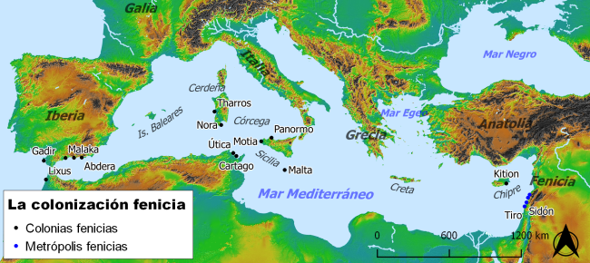

Los fenicios
Los fenicios comenzaron a visitar las costas del sur peninsular a partir de finales del X a.C. Si te acuerdas, procedían de Próximo Oriente, concretamente de la costa de la actual Líbano. Se organizaban en ciudades-estado y conocían la escritura.
Venían buscando metales preciosos: oro y plata. Encontraron especialmente plata, sobre todo en las sierras al norte de Huelva y Sevilla y al sur de Portugal, en una larga franja minera que se llama Faja Pirítica. Las minas más ricas y famosas de la zona son las de Riotinto. Pero además los fenicios descubrieron que las costas andaluzas tenían otras riquezas:
- Por el Estrecho de Gibraltar pasaban cada año las migraciones de atunes. Y había salinas cerca, de las que se podía obtener sal. La sal era el "frigorífico" de la Antigüedad, ya que permitía conservar alimentos. Así que la carne de los atunes y otras especies se podía conservar haciendo salazones y salsas de pescado, que se podían vender por todo el Mediterráneo.
- El Estrecho de Gibraltar era además el punto de partida para las navegaciones por el Océano Atlántico, de la que podían esperar obtener otros productos escasos en el Mediterráneo, como por ejemplo el estaño.
- Además, había tierras fértiles, muy apropiadas para la agricultura.
Así que los fenicios empezaron estableciendo puestos de comercio en lugares costeros como Huelva. Pero no se limitaron a eso. Con el tiempo empezaron a fundar ciudades en la costa, igual que habían hecho por el resto del Mediterráneo. Entre estas ciudades destacan Gadir (Cádiz), Malaka (Málaga), Sexi (Almuñécar), Abdera (Adra) o Spal, la actual Sevilla, que en aquel tiempo estaba muy cerca del mar, ya que las marismas de Doñana formaban una gran bahía (el llamado Lago Ligustino).
|  |
| Ancient World Mapping Center (licencia Open Database License (ODbL)) y Pleiades (licencia CC BY). |
Importante
En el sur peninsular los fenicios encontraron sociedades que se estaban haciendo más complejas, dirigidas por aristocracias dispuestas a hacer intercambios con los extranjeros para adquirir bienes escasos que les dieran prestigio. Así que estas sociedades intercambiaron su metal precioso por los objetos exóticos que traían los fenicios. El contacto con los fenicios cambió a estas sociedades:
- Sus aristocracias ganaron poder.
- Sus centros de poder comenzaron a convertirse en centros urbanos amurallados.
- Adaptaron a sus propias necesidades la cultura y las técnicas de los fenicios. Entre estas técnicas probablemente estuvo la metalurgia del hierro, que en estos momentos empieza a extenderse por la Península, aunque es posible que se introdujese desde el norte. También combinaron las técnicas fenicias con las técnicas locales de orfebrería, creando refinadas joyas de oro, plata y cobre que, junto a otros objetos de lujo, depositaron en las ricas tumbas de los aristócratas.
- Algunos aprendieron la escritura. A partir del siglo VII a.C. aparece la escritura más antigua de la Península Ibérica, llamada la escritura del suroeste. Está inspirada en la fenicia y aparece en el sur de Portugal, extendiéndose hacia el oeste de Andalucía y el sur de Extremadura. Lamentablemente, aún no se comprende lo que dice.
De esa combinación entre elementos indígenas y fenicios nació una nueva cultura, cuyo ejemplo más brillante es Tartesos.
Uno de los mejores ejemplos de los centros urbanos amurallados que se desarrollaron a partir del contacto con los fenicios es el yacimiento de Tejada la Vieja(Escacena del Campo, Huelva), que floreció gracias a la distribución de los metales de la vecina Faja Pirítica hacia el valle del Guadalquivir.
|
Vuelo sobre el yacimiento arqueológico de Tejada la Vieja (Escacena del Campo, Huelva) Vídeo de José Antonio Portero alojado en Youtube. |
Obra publicada con Licencia Creative Commons Reconocimiento No comercial Compartir igual 4.0